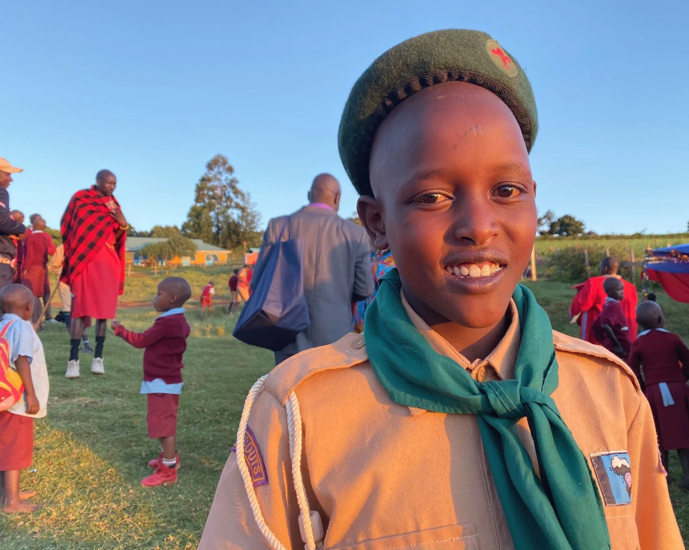

Our Story

Nahodha Rising began with a simple conviction — boys don’t become strong men by accident.
For years, much of the public attention and support has centered on girls, while many boys have been left without real support systems, safe guidance, or consistent mentorship.
Without that support, some drift into alcohol, hopelessness, violence, and other destructive paths.
We are building a mentorship journey that shapes character, strengthens faith, and develops leadership from a young age.